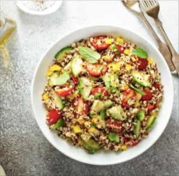

Primer Plato
Ensalada Asiática de quinoa y gambas
Indice
Ingredientes:
- Quinoa -- 60 g
- Gambones crudos pelados o ya cocidos -- 150 g
- Aguacate -- 1
- Canónigos -- 100 g
- Tomate cherry -- 100 g
- Zumo de lima -- 20 ml
- Chile en copos (1/4 cucharadita) opcional -- 2 g
- Salsa de soja -- 15 ml
- Sirope de arce o de ágave o miel -- 2.5 ml
Paso a paso:
- Hervir la quinoa siguiendo las instrucciones del fabricante, aproximadamente 15 minutos.
- Escurrirmos y reservamos en un recipiente limpio.

- Cocemos los gambones, si están crudos, y reservamos.
- Hacemos el aliño mezclando el zumo de lima y el chile en copos, el aceite y el sirope de arce.
- Añadimos la mitad del aliño a la quinoa y agregamos la cebolleta picada, los canónigos, los gambones, el aguacate en láminas y los tomates cherry partidos por la mitad.
- Salpimentamos al gusto y echamos el resto del aliño. Espolvoreamos con el cilantro fresco picado.
Resultado final:
